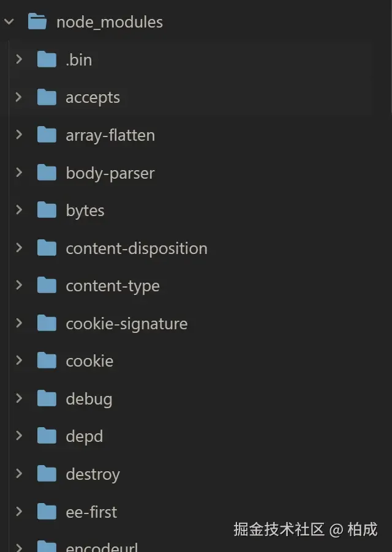
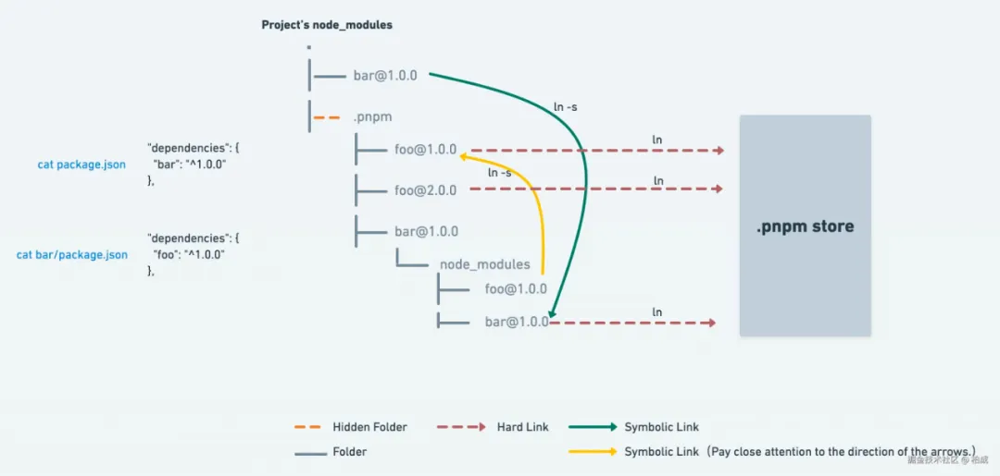
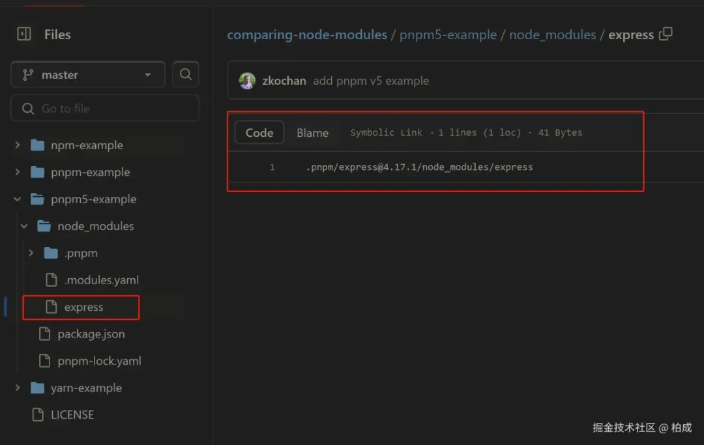

npm2
在 npm 3.0 版本之前，项目的 node_modules 会呈现出嵌套结构，也就是说，我安装的依赖、依赖的依赖、依赖的依赖的依赖...，都是递归嵌套的
node_modules
├─ express
│ ├─ index.js
│ ├─ package.json
│ └─ node_modules
│ ├─ accepts
│ │ ├─ index.js
│ │ ├─ package.json
│ │ └─ node_modules
│ │ ├─ mime-types
| | | └─ node_modules
| | | └─ mime-db
| │ └─ negotiator
│ ├─ array-flatten
│ ├─ ...
│ └─ ...
└─ A
├─ index.js
├─ package.json
└─ node_modules
└─ accepts
├─ index.js
├─ package.json
└─ node_modules
├─ mime-types
| └─ node_modules
| └─ mime-db
└─ negotiator
设计缺陷
这种嵌套依赖树的设计确实存在几个严重的问题
- 「路径过长问题：」 由于包的嵌套结构 ，
node_modules的目录结构可能会变得非常深，甚至可能会超出系统路径长度上限 ，毕竟 windows 系统的文件路径默认最多支持 256 个字符 - 「磁盘空间浪费：」 多个包之间难免会有公共的依赖，公共依赖会被多次安装在不同的包目录下，导致磁盘空间被大量浪费 。比如上面
express和 A 都依赖了accepts，它就被安装了两次 - 「安装速度慢」：由于依赖包之间的嵌套结构，
npm在安装包时需要多次处理和下载相同的包，导致安装速度变慢，尤其是在依赖关系复杂的项目中
当时 npm 还没解决这些问题， 社区便推出了新的解决方案 ，就是 yarn。它引入了一种新的依赖管理方式——「扁平化依赖。」
看到 yarn 的成功，npm 在 3.0 版本中也引入了类似的扁平化依赖结构
yarn
「yarn 的主要改进之一就是通过扁平化依赖结构来解决嵌套依赖树的问题」
具体来说铺平，yarn 尽量将所有依赖包安装在项目的顶层 node_modules 目录下，而不是嵌套在各自的 node_modules 目录中。
这样一来，减少了目录的深度，避免了路径过长的问题 ，也尽可能避免了依赖被多次重复安装的问题
我们可以在 yarn-example 看到整个目录，全部铺平在了顶层 node_modules 目录下，展开下面的包大部分是没有二层 node_modules 的
然而，有些依赖包还是会在自己的目录下有一个 node_modules 文件夹，出现嵌套的情况，例如 yarn-example 下的http-errors 依赖包就有自己的 node_modules，原因是：
当一个项目的多个依赖包需要同一个库的不同版本时，「yarn 只能将一个版本的库提升到顶层」 「node_modules」 「目录中。」 对于需要 「这个库其他版本」 的依赖，yarn 仍然需要在这些依赖包的目录下创建一个嵌套的 node_modules 来存放不同版本的包
比如，包 A 依赖于 lodash@4.0.0，而包 B 依赖于 lodash@3.0.0。由于这两个版本的 lodash 不能合并，yarn 会将 lodash@4.0.0 提升到顶层 node_modules，而 lodash@3.0.0 则被嵌套在包 B 的 node_modules 目录下。
幽灵依赖
「虽然 yarn 和 npm 都采用了扁平化的方案来解决依赖嵌套的问题，但这种方案本身也有一些缺陷，其中幽灵依赖是一个主要问题。」
幽灵依赖，也就是你明明没有在 package.json 文件中声明的依赖项，但在项目代码里却可以 require 进来 这个也很容易理解，因为依赖的依赖被扁平化安装在顶层 node_modules 中，所以我们能访问到依赖的依赖
但是这样是有隐患的，因为没有显式依赖，未来某个时候这些包可能会因为某些原因消失（例如新版本库不再引用这个包了，然后我们更新了库），就会引发代码运行错误
浪费磁盘空间
「而且还有一个问题，就是上面提到的依赖包有多个版本的时候，只会提升一个，那其余版本的包不还是复制了很多次么，依然有浪费磁盘空间的问题」
那社区有没有解决这俩问题的思路呢？pnpm 就是其中最成功的一个
pnpm
pnpm 通过 「全局存储和符号链接机制」 从根源上解决了依赖重复安装和路径长度问题，同时也避免了扁平化依赖结构带来的幽灵依赖问题 pnpm 的优势概括来说就是“快、准、狠”：
- 快：安装速度快
- 准：安装过的依赖会准确复用缓存，甚至包版本升级带来的变化都只 diff，绝不浪费一点空间
- 狠：直接废掉了幽灵依赖
执行 npm add express，我们可以在 pnpm-example 看到整个目录，由于只安装了 express，那 node_modules 下就只有 express
那么所有的（次级）依赖去哪了呢？binggo，在node_modules/.pnpm/目录下，.pnpm/ 以平铺的形式储存着所有的包
三层寻址
所有 npm 包都安装在全局目录 ~/.pnpm-store/v3/files 下，同一版本的包仅存储一份内容，甚至不同版本的包也仅存储 diff 内容。
顶层 node_modules 下有 .pnpm 目录以打平结构管理每个版本包的源码内容，以硬链接方式指向 pnpm-store 中的文件地址。
每个项目 node_modules 下安装的包以软链接方式将内容指向 node_modules/.pnpm 中的包。所以每个包的寻找都要经过三层结构：node_modules/package-a > 软链接 node_modules/.pnpm/package-a@1.0.0/node_modules/package-a > 硬链接 ~/.pnpm-store/v3/files/00/xxxxxx。
这就是 pnpm 的实现原理。官方给了一张原理图，可以搭配食用
前面说过，npm 包都被安装在全局 pnpm store ，默认情况下，会创建多个存储（每个驱动器（盘符）一个），并在项目所在盘符的根目录
所以，同一个盘符下的不同项目，都可以共用同一个全局 pnpm store，绝绝子啊 👏，大大节省了磁盘空间，提高了安装速度
软硬链接
也就是说，所有的依赖都是从全局 store 硬连接到了 node_modules/.pnpm 下，然后之间通过软链接来相互依赖。
那么，这里的软连接、硬链接到底是什么东西？
硬链接是指向磁盘上原始文件所在的同一位置 （直接指向相同的数据块）
软连接可以理解为新建一个文件，它包含一个指向另一个文件或目录的路径 （指向目标路径）
总结
「npm2 的嵌套结构」：每个依赖项都会有自己的 node_modules 目录，导致了依赖被重复安装，严重浪费了磁盘空间 💣；在依赖层级比较深的项目中，甚至会超出 windows 系统的文件路径长度 💣
「npm3+ 和 Yarn 的扁平化策略：」 尽量将所有依赖包安装在项目的顶层 node_modules 目录下，解决了 npm2 嵌套依赖的问题。但是该方案有一个重大缺陷就是“幽灵依赖”💣；而且依赖包有多个版本时，只会提升一个，那其余版本依然会被重复安装，还是有浪费磁盘空间的问题 💣
「pnpm 全局存储和符号链接机制：」 结合软硬链和三层寻址，解决了依赖被重复安装的问题，更加变态的是，同一盘符下的不同项目都可以共用一个全局 pnpm store。节省了磁盘空间，并且根本不存在“幽灵依赖”，安装速度还贼快 💪💪💪